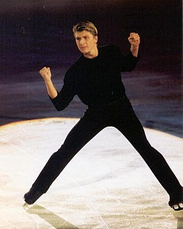

Grandes Figuras
A principios de siglo, la figura más destacada del patinaje fue el sueco Ulrich Salchow, que inventó el salto del mismo nombre y ganó los campeonatos del mundo en diez ocasiones. En los años 20 y 30 del siglo XX, destacó la noruega Sonja Henie, que ganó tres medallas de oro olímpicas entre 1928 y 1936 y diez campeonatos del mundo consecutivos desde 1927, igualando a Ulrich Salchow en un récord que no ha logrado alcanzar ningún otro patinador individual. Sonia Henie también popularizó la típica falda corta y patines blancos que usan las patinadoras.12
Tras la segunda guerra mundial los patinadores de Estados Unidos y Canadá empezaron a destacar en este deporte. La figura principal de esta época fue Richard Button, el primer patinador que logró realizar el axel doble, salto que cuenta con dos giros y medio en el aire, y un salto triple utilizando la técnica de cruzar los pies en el aire, inventada por su entrenador, el suizo Gustave Lussi.13 También se debe mencionar a los estadounidenses David Jenkins, Janet Lynn y Peggy Fleming; y los canadienses Barbara Ann Scott y Donald Jackson.1214
En las últimas décadas, varios patinadores se han destacado ganando títulos mundiales u olímpicos; entre ellos se encuentran los patinadores masculinos Scott Hamilton, Brian Boitano, Viktor Petrenko Brian Orser, Kurt Browning, Robin Cousins, Elvis Stojko, Alekséi Urmánov, Alekséi Yagudin, Yevgeni Pliúshchenko, Stéphane Lambiel, Jeffrey Buttle, Johnny Weir, Evan Lysacek, Daisuke Takahashi, Patrick Chan, Yuzuru Hanyu y Javier Fernández López; y las patinadoras Katarina Witt, Midori Ito, Kristi Yamaguchi, Dorothy Hamill, Chen Lu, Oksana Bayul, Michelle Kwan, Sarah Hughes, Tara Lipinski, Irina Slutskaya, Mariya Butyrskaya, Shizuka Arakawa, Yu-Na Kim, Miki Ando, Evgenia Medvedeva, Mao Asada y la última ganadora de los juegos: Alina Zagitova.1516
La categoría de parejas estuvo dominada mucho tiempo por la Unión Soviética y posteriormente Rusia, con patinadores del calibre de Liudmila Belousova y Oleg Protopopov, Irina Rodnina, que ganó 10 campeonatos del mundo y tres medallas de oro olímpicas con dos parejas sucesivas, Alekséi Ulánov y Aleksándr Zaitsev y Yekaterina Gordéyeva y Serguéi Grinkov entre otros. En el siglo XXI empezaron a destacar las parejas chinas, entrenadas por Yao Bin, como los campeones olímpicos de 2010 Xue Shen y Hongbo Zhao.17
El programa de Bolero de Ravel, con el que los patinadores británicos Jayne Torvill y Christopher Dean ganaron la medalla de oro de danza en los Juegos Olímpicos de Sarajevo (1984) es considerado un gran clásico del patinaje sobre hielo.

Alekséi Yagudin, uno de los patinadores más destacados de la era moderna